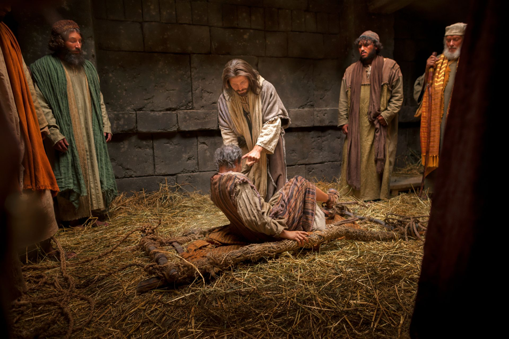

5 MINUTE TRAINING
The Following Passages are from…
Read the complete talk"Overwhelmed by this vision, Moses asked two profound questions to God: Why? And by what means? In other words, he wanted to understand the purpose.
The Lord answered, “For mine own purpose have I made these things … to bring to pass the immortality and eternal life of man.” The prophet Nephi later testified, “For … he denieth none that come unto him … ; and all are alike unto God.” How is this purpose fulfilled? Because of Jesus Christ, all can receive the gift of eternal life—which includes living in God’s presence eternally as families.
Six months ago, our prophet, President Dallin H. Oaks, taught:
‘The doctrine of The Church of Jesus Christ of Latter-day Saints centers on the family. Essential to our doctrine on the family is the temple. The ordinances received there enable us to return as eternal families to the presence of our Heavenly Father. …
‘ … The gospel plan … is implemented through our mortal families, and its intended destiny is to exalt the children of God in eternal families.’”
"The Lord has also declared that ‘marriage is ordained of God … that the earth might answer the end of its creation,’ and without the sealing authority needed to enter these eternal covenants that unite families forever, ‘the whole earth would be utterly wasted at his coming.’
The temple stands as a symbol of hope, not pressure. The gospel of Jesus Christ is not a wedge to divide families but a bridge to unite them eternally. We must ensure that our discipleship reflects the Savior’s patience, His gentleness, and His perfect love. Temple sealings invite us into the divine order of God. Is it any wonder that the temple sealing is often described as the crowning ordinance?
My dear brothers and sisters, many of you are from families yet to be sealed in the temple. Some of you who are listening are not members of the Church. Others of you who are members of the Church may have spouses not of our faith. Today I say to each of you: You are essential to God’s plan.”
"Brothers and sisters, the Lord honors patient faith. And it is never too late for miracles.
Brothers and sisters, God keeps His promises—but in His timing. These stories are not about statistics. They are about souls.
I witness that Heavenly Father and Jesus Christ know every family represented in these stories. They know the tears, the prayers, and the patience. They know the feelings of every waiting spouse, every praying heart, and every child. They know every sacred promise. These things remind us that conversion is personal. Timing is individual. Agency is sacred.”
While we begin our ministering council, consider God’s timing and plan for you in your personal journey.